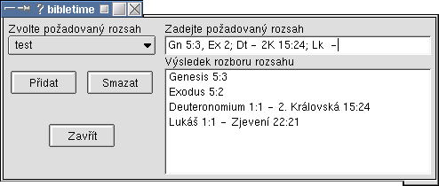
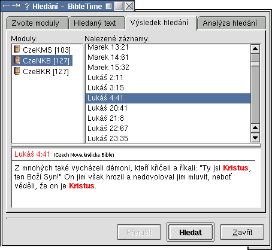

| Předcházející | Kapitola 3. Ovládání programu | Další |
Hledání v dokumentu je pøístupné pøes pravé tlaèítko my¹i na názvu modulu v Hlavním seznamu. Volba se pøekvapivì jmenuje "Hledat ve vybraných modulech". Pøidr¾ením klávesy Shift nebo CTRL a kliknutím na dal¹í moduly vyberete více modulù, které se budou prohledávat zároveò.
Zde mù¾ete zadat text, který chcete hledat a nastavit vlastnosti hledání. "Regulární výraz" umo¾òuje pomocí standardní syntaxe regexp vytøíbit hledání.
Napi¹te jedno nebo více slov èi jejich èástí (oddìlujte je mezerama), frázi nebo vzor (regulární výraz), které chcete hledat. Jak budou vlo¾ená data pou¾ita urèuje zvolená mo¾nost - Více slov, Pøesné hledání nebo Regulární výraz. A samozøejmì také volba Rozli¹ovat velikost.
 | Funguje zde "táhni a pus»" (drop & drop), mù¾ete pøetahovat ver¹e a zálo¾ky do vstupního øádku. Rovnì¾ mù¾ete pou¾ít funkci kopírovat - vlo¾it. |
Kliknutím na políèko Rozli¹ovat velikost zapnete nebo vypnete tuto volbu. Pokud je políèko za¹krtnuté, budou nalezeny pouze ver¹e, ve kterých souhlasí i velká a malá písmena. Pøi neza¹krtnutém políèku budou nalezeny i ty ver¹e, které se neshodují se zadanými velkýmí a malými písmeny. Napøíklad chcete najít "JSEM", ale ne "Jsem" nebo "jsem" - za¹krtnìte Rozli¹ovat velikost. A pokud chcete najít v¹echna "jsem", "Jsem" i "JSEM" (nebo i "JSeM" apod.), ponechte políèko neza¹krtnuté.
Volba Více slov umo¾òuje hledat v¹echny øádky (nebo ver¹e), které obsahují v¹echna zadaná slova nebo jejich èásti. Pozice a poøadí slov na øádku není dùle¾itá. Pokud se v¹echna zadaná slova (nebo jejich èásti) v jakémkoli poøadí, tøeba i oddìlena jinými slovy, ve ver¹i vyskytují, bude tento ver¹ uveden ve výpisu nalezených ver¹ù. Pøíklad: pro "øekl volal" bude nalezeno i Genesis 24,58 "Tedy zavolali Rebeky, a øekli jí: Chce¹-li jíti s mu¾em tímto? I øekla: Pùjdu."
Volba Pøesné hledání umo¾òuje hledat v¹echny øádky (nebo ver¹e), které pøesnì obsahují zadaný text, vèetnì mezer. Nalezená fráze nemusí odpovídat zaèátku nebo konci slova. Pøíklad: pro "bral se od" bude nalezeno i Matou¹ 19,15 "A po vzkládání na nì rukou odebral se odtud."
Regulární výrazy umo¾òují hledání na základì pøedlohy (pattern) nebo sady pøedloh oddìlených svislou èarou "|". Základní hledání pomocí regulárních výrazù je stejné jako u Pøesného hledání se zapnutou volbou Rozli¹ovat velikost.
Síla regulárních výrazù je ale v mo¾nostech definování výrazù, podle kterých se vyhledává. Výraz se skládá z obyèejných znakù (písmen apod.) a znakù speciálních, které mají zvlá¹tní význam. Speciálními znaky jsou .\[^*$?+. Obyèejné znaky jsou v¹echny ostatní znaky, které nejsou speciální. Znak zpìtného lomítka "\" se pou¾ívá na konverzi speciálního znaku na znak obyèejný a naopak.
Pøíklad: podle výrazu "m. jest\." budou nalezeny vìty, které konèí na "má jest." nebo "mé jest." nebo tøeba "kterém¾ jest." První teèka v "m. jest\." je speciální znak, který zastupuje libovolný znak na této pozici. Zpìtné lomítko pak znamená, ¾e následujicí znak (teèka) nemá být chápán jako speciální, ale jako obyèejný.
. Teèka zastupuje libovolný znak. Detaily...
* Hvìzdièka zastupuje 0 nebo více znakù podle priority: sada, znak nebo urèený znak. Detaily...
+ Plus zastupuje 1 nebo více znakù podle priority: sada, znak nebo urèený znak. Detaily...
? Otazník zastupuje 0 nebo 1 znak podle priority: sada, znak nebo urèený znak. Detaily...
[ ] Hranaté závorky zastupují libovolný znak uvedený mezi nimi. Detaily...
^ Støí¹ka (¹ipka nahoru) jako první znak mezi [ ] znamená negaci. Detaily...
^ Støí¹ka (¹ipka nahoru) na zaèátku výrazu zastupuje zaèátek øádku. Detaily...
$ Dolar na konci výrazu zastupuje konec øádku. Detaily...
| Svislá èára znamená logické NEBO (OR). Detaily...
( ) Závorky uzavírají výraz do skupiny. Není podporováno!
\ Zpìtné lomítko (backslash) pøed speciálním znakem z nìj udìlá obyèejný znak. Detaily...
\ Zpìtné lomítko (backslash) pøed obyèejným znakem z nìj udìlá speciální znak. Detaily...
Teèka "." zastupuje jakýkoli jeden znak vèetnì mezery a ostatních nepísmenných znakù. s.t mù¾e znamenat set, sát, sit i s t apod., a nalezneme jej ve slovech jako setí, padesát, situace, s tebou, sstoupil (kralicky). b..t nalezne slova jako bratr, byste, buïte, nebe¹tí.
Hvìzdièka zastupuje nula nebo více znakù v poøadí: sada, znak nebo urèený znak. Pou¾ití kombinace ".*" (teèkahvìzdièka) po velmi obecném výrazu mù¾e zpùsobit, ¾e hledání bude trvat velmi dlouho a program bude pùsobit zamrzlým dojmem. ra*b nalezne pahrbek, drabant i Raab. Abra.*m najde i ver¹e typu Numeri 16,18 "Tedy vzal jeden ka¾dý kadidlnici svou, a nabrav¹e do nich uhlí, vlo¾ili na nì i kadidla, a stáli u dveøí stánku úmluvy, i Moj¾í¹ i Aron."
Plus zastupuje jeden nebo více znakù v poøadí: sada, znak nebo urèený znak. Pou¾ití kombinace ".+" (teèkaplus) po velmi obecném výrazu mù¾e zpùsobit, ¾e hledání bude trvat velmi dlouho a program bude pùsobit zamrzlým dojmem. ra+b nalezne drabant a Raab, ale ne pahrbek.
Otazník zastupuje nula nebo jeden znak v poøadí: sada, znak nebo urèený znak. ra?b nalezne pahrbek a drabant, ale ne Raab.
Hranaté závorky uzavírají seznam mo¾ných znakù, které se mohou na tomto místì vyskytnout. Celý seznam zastupuje pouze jeden mo¾ný znak! Teèka, plus a otazník nejsou uvnitø závorek speciální znaky. Znakem mínus "-" mù¾ete vyznaèit rozsah. Pokud chcete mít v seznamu i støí¹ku "^", neuvádìjte ji hned za levou závorkou, proto¾e tam má speciální význam (negace). Pravou hranatou závorku jako souèást seznamu uveïte hned na prvním místì (nebo na druhém za speciálním znakem "^"). Obyèejný znak mínus "-" uveïte jako první (nebo druhý za speciálním znakem "^") nebo poslední znak v seznamu. s[eia]t zastupuje set, sit a sat, ale ne sot. s[eia]+t zastupuje navíc i seat, seet, siet, atd. [a-d] zastupuje a, b, c, nebo d. [A-Z] zastupuje libovolné velké písmeno. [.;:?!] zastupuje ., ;, :, ?, nebo ! ale ne èárku. [ ]^-] zastupuje ] nebo ^ nebo -
Pokud je støí¹ka jako první znak za levou hranatou závorkou, má význam negace (NOT). s[^io]t zastupuje set, sat, atd., ale ne sit a sot.
Pokud je støí¹ka prvním znakem výrazu, hledají se pouze øádky, které tímto výrazem zaèínají. V nìkterých textech ov¹em mohou být urèité formátovací znaky, kvùli kterým tato vlastnost nemusí v¾dy pøesnì fungovat, ale mù¾e pomoci napsat za støí¹ku nìkolik teèek podle poètu formátovacích znakù. ^Na poèátku odpovídá øádkùm zaèínajícím na "Na poèátku". (Mù¾e být potøeba zadat: ^.....Na poèátku)
Pokud je dolar posledním znakem výrazu, hledají se pouze øádky, které tímto výrazem konèí. V nìkterých textech ov¹em mohou být urèité formátovací znaky, kvùli kterým tato vlastnost nemusí v¾dy pøesnì fungovat, ale mù¾e pomoci napsat pøed dolar nìkolik teèek podle poètu formátovacích znakù. Amen\.$ odpovídá øádkùm konèícím na "Amen." (Mù¾e být potøeba zadat: Amen\....$, Amen\..........$, nebo dokonce Amen\....................$)
Svislá èára mezi výrazy znamená NEBO (OR). Jan|Petr znamená Jan nebo Petr. Jan .*Petr|Petr .*Jan znamená Jan ... Petr nebo Petr ... Jan. (kombinace .* zpomaluje hledání) bolest|utrpení|smutek znamená bolest, nebo utrpení nebo smutek.
Pou¾ití závorek ( ) není podporováno!
Zpìtné lomítko pøed speciálním znakem urèuje, ¾e znak nemá speciální význam, ale zastupuje pouze sám sebe. mluv\. znamená mluv., ale ne mluví a nenalezne proto promluví.
Zpìtné lomítko pøed obyèejným znakem urèuje, ¾e znak nezastupuje obyèejný znak, ale ¾e má speciální význam.
\b mimo [ ] oznaèuje okraj slova. Uvnitø [ ] znamená vrácení o jeden znak (backspace). \bmluv\b znamená mluv, ale ne promluv nebo mluvení
\B oznaèuje ne-okraj slova. \Bmluv\B znamená promluví a nemluvila, ale ne mluv, promluv nebo mluvení.
\d oznaèuje èíslici; stejnì jako [0-9].
\D oznaèuje ne-èíslici, stejnì jako [^0-9].
\s oznaèuje mezeru.
\S oznaèuje ne-mezeru.
\w oznaèuje alfanumerický znak; stejnì jako [a-zA-Z0-9_].
\W oznaèuje ne-alfanumerický znak; stejnì jako [^a-zA-Z0-9_].
Mù¾ete omezit hledání jen na urèitou oblast textu.
Bez omezení zru¹í jakékoli omezení. Hledat se bude v celém dokumentu.
Poslední výsledek Umo¾òuje prohledat pouze nalezené ver¹e z pøedchozího hledání.
Pou¾ít rozsah Hledat se bude pouze v oblasti vymezené zvoleným rozsahem.
Pokud zvolíte Bez omezení a zadáte v modulu CzeBKR hledání jména Je¾í¹, nalezne se 846 ver¹ù. Kdy¾ pak zvolíte Poslední výsledek a spustíte hledání pro titul Kristus, zùstane jich 31 z pøedchozích 846. A kdy¾ pak spustíte hledání je¹tì pro titul Pán, zùstane pouhých 5 ver¹ù z tìch 31. V¹ech zbylých pìt ver¹ù obsahuje jméno Je¾í¹ a oba tituly Kristus a Pán.
Mù¾ete si vytváøet vlastní definice rozsahù. Zvolte Pou¾ít rozsah a kliknìte na tlaèítko Upravit rozsahy. Do objeviv¹ího se okna pak zadejde dolní a horní mez oddìlené pomlèkou "-". Èíslo kapitoly od èísla ver¹e oddìlujte dvojteèkou. Mù¾ete zadat i nìkolik nespojitých oblastí, oddìlte je èárkou nebo støedníkem (chovají se trochu jinak, vyzkou¹ejte). Ve spodním políèku se prùbì¾nì zobrazuje rozbor vámi zadaného rozsahu. Ovìøte si, ¾e systém správnì pochopil vás zámìr a pokud ne, upravte vstupní pole. Pokud jste spokojeni, kliknìte na Pøidat a do okénka zadejte název va¹eho rozsahu.
| Funguje zde "táhni a pus»" (Drag & Drop) - mù¾ete do vstupního pole pøetahovat èísla ver¹ù nebo zálo¾ky Mù¾ete pou¾ít i funkci Kopírovat - Vlo¾it. |

Zde mù¾ete vidìt, kolikrát byl hledaný text nalezen v ka¾dém jednotlivém modulu. Poklepáním na název modulu rozbalíte seznam odkazù. Kliknutím na odkaz zobrazíte náhled ver¹e ve spodní èásti okna.
| Funguje zde "táhni a pus»" (Drag & Drop). |
| Pøeta¾ením odkazu do Hlavního seznamu mù¾ete vytvoøit zálo¾ku. |
| Pøeta¾ením odkazu na modul v Hlavním seznamu otevøete nové okno modulu na místì odkazu. (Pouze u Biblí a komentáøù.) |
| Pøeta¾ením odkazu do ji¾ otevøeného dokumentu pøeskoèíte na místo odkazu. (Pouze u Biblí a komentáøù.) |

Analýza hledání graficky znázoròuje poèet výskytù v jednotlivých knihách. Pro ka¾dý modul je pou¾ita jiná barva.
| Pokud umítíte ukazatel my¹i na nìkterou knihu, objeví se po chvíli informace o poètu výskytù v knize. |

| Předcházející | Domů | Další |
| Okno MDI | Nahoru | Výstup |